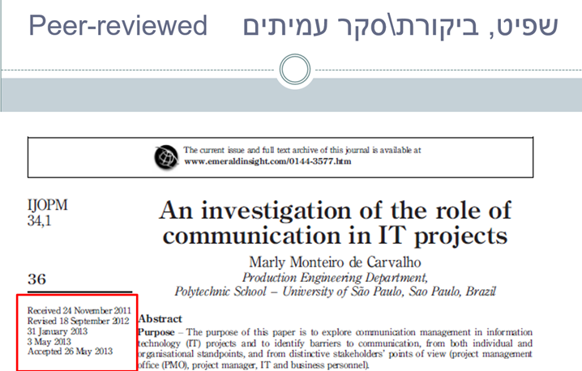

תשובה: כדי לחפש מאמרים באופן ממוקד תוך חיסכון משמעותי בזמן חשוב להיעזר בשלושה מרכיבים עיקריים של המאמר האקדמי: כותרת המאמר, תקציר המאמר ומילות המפתח המופיעות בסוף התקציר.
אם שלושת החלקים האלו מתייחסים לנושא עליו אתם חוקרים - תוכלו לקבוע בקלות אם מדובר במאמר הרלוונטי לעבודתכם האקדמית. כדי ללמוד עוד על מבנה המאמר האקדמי לחצו כאן.
בנוסף, כדי למקד את תהליך החיפוש מומלץ להשתמש בפונקציונליות של חיפוש מתקדם במאגרי המידע. רוצים ללמוד איך לבצע חיפוש מתקדם במאגר מידע? צפו בסרטון.
יחידות לימוד נוספות שיכולות לסייע לכם לבצע חיפוש יעיל: שימוש בלוגיקה בוליאנית, חיפוש יעיל בשפה האנגלית.
בנוסף, כדי למקד את תהליך החיפוש מומלץ להשתמש בפונקציונליות של חיפוש מתקדם במאגרי המידע. רוצים ללמוד איך לבצע חיפוש מתקדם במאגר מידע? צפו בסרטון.
יחידות לימוד נוספות שיכולות לסייע לכם לבצע חיפוש יעיל: שימוש בלוגיקה בוליאנית, חיפוש יעיל בשפה האנגלית.
תשובה: כאשר מתחברים למאגר מידע כסטודנט של מוסד לימודים מוכר מתאפשרת גישה חינמית למקורות המידע המופיעים במאגרים השונים.
כדי ללמוד על אופן ההתחברות כסטודנט בHIT יש להיכנס ליחידת לימוד מהו מאגר מידע ולצפות בסרטון המסביר על פעולה זו.
כדי ללמוד על אופן ההתחברות כסטודנט בHIT יש להיכנס ליחידת לימוד מהו מאגר מידע ולצפות בסרטון המסביר על פעולה זו.
תשובה: בכל מאגר מידע ניתן למצוא מקורות מידע רלוונטיים בהתאם לתחומי הדעת בו הוא עוסק.
קראו בהרחבה על נושא זה ביחידת הלימוד הבדלים בין מאגרי מידע, שם ישנה חלוקה של מאגרי מידע לפי פקולטות במכון הטכנולוגי HIT.
קראו בהרחבה על נושא זה ביחידת הלימוד הבדלים בין מאגרי מידע, שם ישנה חלוקה של מאגרי מידע לפי פקולטות במכון הטכנולוגי HIT.
תשובה: בזכות שימוש נכון בכלים טכנולוגיים ניתן לקצר את תהליך יצירת הרשימה הביבליוגרפית וליצור אותה ביעילות תוך חיסכון זמן משמעותי.
צפו בסרטון כדי ללמוד איך ליצור רשימת מקורות באמצעות התוכנה MyBib.
צפו בסרטון כדי ללמוד איך ליצור רשימת מקורות באמצעות התוכנה MyBib.
תשובה: ספריית HIT רוכשת בכל שנה מנוי למגוון מאגרי מידע המאפשר גישה חינמית למקורות המידע המופיעים במאגרים השונים. במידה ונתקלתם במאמר בתשלום ואתם סבורים שהוא רלוונטי לעבודתכם האקדמית, מומלץ לפנות לצוות הספרייה כדי לברר את הנושא.
טלפון: 03-5026547 | מייל: ester@hit.ac.il
טלפון: 03-5026547 | מייל: ester@hit.ac.il
תשובה: בעמוד הראשון של מאמר שעבר תהליך של ביקורת עמיתים יופיעו פרטי התהליך.
בתמונה המצורפת ניתן לראות המאמר התקבל במערכות בנובמבר 2011 ונשלח באופן אנונימי לביקורת למספר מומחים בתחום. המאמר התקבל בחזרה בספטמבר 2012, והתקבל לפרסום במאי 2013.
קראו בהרחבה על נושא ביקורת עמיתים ביחידת הלימוד הערכת מידע באינטרנט.
בתמונה המצורפת ניתן לראות המאמר התקבל במערכות בנובמבר 2011 ונשלח באופן אנונימי לביקורת למספר מומחים בתחום. המאמר התקבל בחזרה בספטמבר 2012, והתקבל לפרסום במאי 2013.

קראו בהרחבה על נושא ביקורת עמיתים ביחידת הלימוד הערכת מידע באינטרנט.